Metrik durch eine streng monoton steigende Funktion auf den reellen Zahlen
1. Satz
Sei 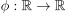 eine streng monotone, stetige Funktion, dann ist:
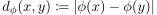
1
eine zur Standardtopologie äquivalente Metrik
2. Beweis
o.B.d.A. streng monoton steigend:
2.1. Metrik
2.1.1. Positive Definitheit (Metrik)
Sei  , so folgt 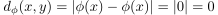
Sei o.B.d.A. 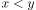, so folgt nach Annahme 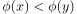 und damit auch 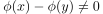 bzw. 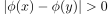
, so folgt 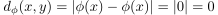
Sei o.B.d.A. 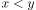, so folgt nach Annahme 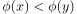 und damit auch 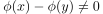 bzw. 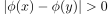
2.1.2. Symmetrie einer Metrik
Folgt aus der Symmetrie von 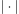:
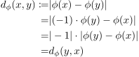
2
2.1.3. Dreiecksungleichung
Folgt aus der Dreiecksungleichung von : Seien 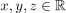 so gilt:
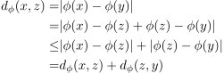
3
2.2. Äquivalent
Seien 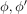 streng monotone, stetige Funktion, so gilt:
Sei 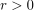 und  , dann gilt: 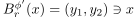 für
, dann gilt: 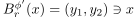 für  .
Insbesondere gilt für 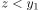 auch 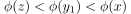 bzw. 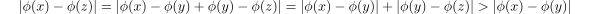, analog auch für 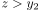
.
Insbesondere gilt für 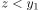 auch 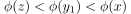 bzw. 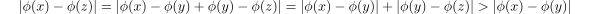, analog auch für 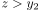
Sei ferner 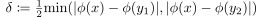, so gilt  .
Sei 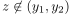, so gilt nach der Bemerkung von oben 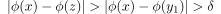 und damit auch 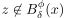
.
Sei 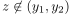, so gilt nach der Bemerkung von oben 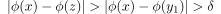 und damit auch 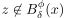
Der Vergleich mit folgt dann durch Symmetrie des Arguments und Wahl von 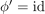